Statistical mechanics
Compilado de atividades computacionais executadas durante a discipina de mecânica estatística ministradas pelo professor Paulo Campos.
Atividade 1
Objetivo: Simular computacionalmente um número M de caminhantes aleatórios unidimensionais capazes de realizar N passos, e plotar histogramas variados de cada uma dessas simulações, assim como calcular média e variância para cada uma delas.
Sobre a minha simulação: Foram utilizados como parâmetros aqui todos os caminhantes centrados na posição 0, com uma probabilidade de 50% de tomar um passo para a direita e 50% de tomar um passo para esquerda. Para o algoritmo de decisão implementei um método de Monte Carlo a partir da função geradora de números aleatórios (rand()) tomando passos temporais no intervalo de 0.1. Conduzi as simulações em C usando o script referenciado a seguir, e gerei arquivos para plotar os histogramas em um software externo.
#include<stdlib.h>
#include<math.h>
#include<stdio.h>
#include<time.h>
int main(){
int i,j,N=1000,M=1000;
double p,t,r,x=0,xm, xd;
FILE*random;
random = fopen("caminhante.txt","w+");
printf("GERADOR DE ARQUIVO CAMINHANTE ALEATÓRIO\n\n");
printf("escolha uma probabilidade de passo:\n");
scanf("%lf", &p);
printf("escolha um tamanho para os passos:\n");
scanf("%lf", &t);
srand(time(NULL));
//lembrar: M caminhantes realizando N passos!
for(j=0;j<M;j++){
x=0;
xm=0;
xd=0;
for (i=0;i<N;i++){
r = rand()/((double)RAND_MAX);
if(p<r){
x=x+t;
}
else{
x=x-t;
}
}
fprintf(random,"%d %lf\n", j, x);
xm = (xm + x);
xd = (xd + x*x);
}
xm = xm/M;
xd = xd/M;
printf("\n%lf\n",xm);
printf("%lf\n",xd);
fclose(random);
printf("seu arquivo foi criado com sucesso! :)\n");
return (0);
}
Simulação 1
- Parâmetros: M = 1000, N = 100, p = 0.5, t = 0.1
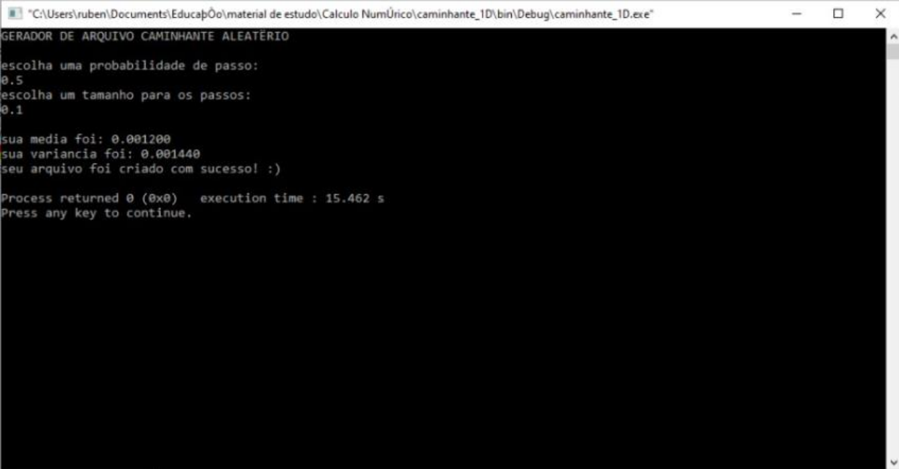
Aqui, podemos observar os cálculos para média e variância como sendo: $<x>$ = 0.0012 e $\sigma^2$ = 0.00144
- Histograma:
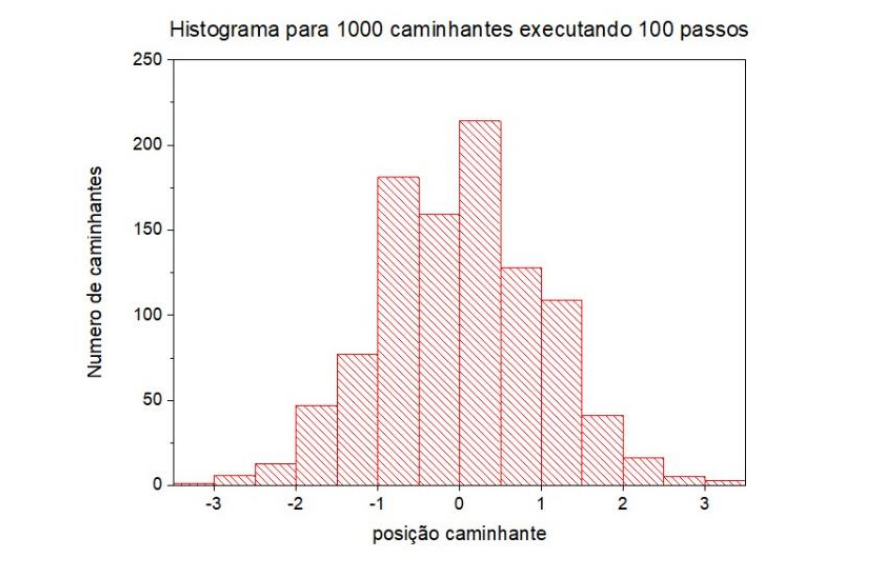
Simulação 2
- Parâmetros: M = 1000, N = 200, p = 0.5, t = 0.1
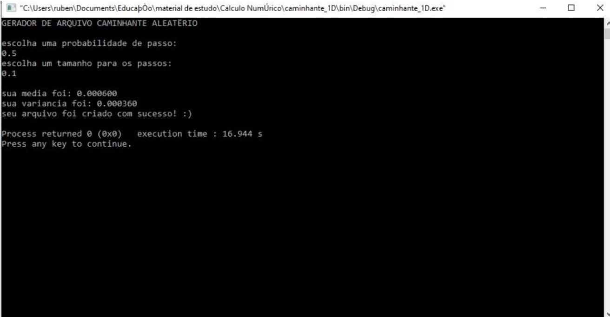
Aqui, podemos observar os cálculos para média e variância como sendo: $<x>$ = 0.0006 e $\sigma^2$ = 0.00036
- Histograma:
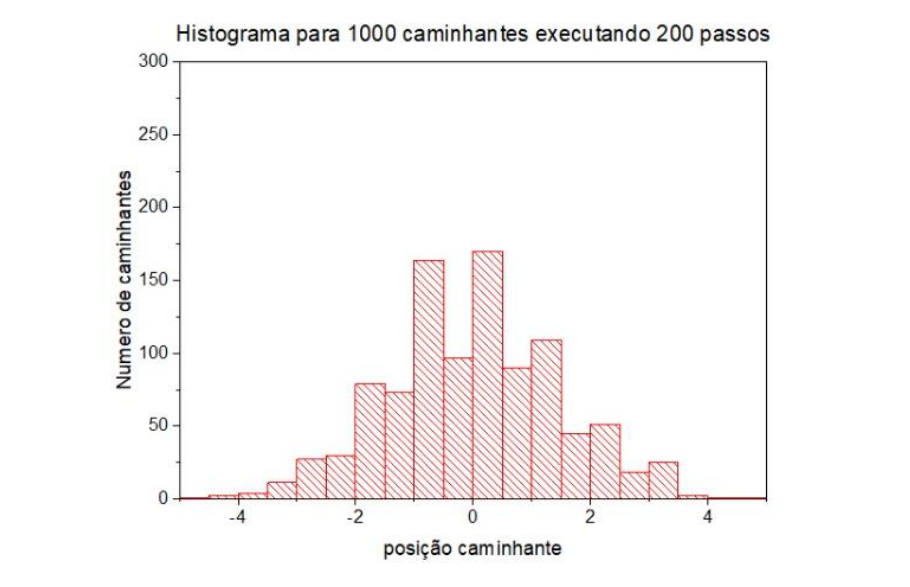
Simulação 3
- Parâmetros: M = 1000, N = 1000, p = 0.5, t = 0.1
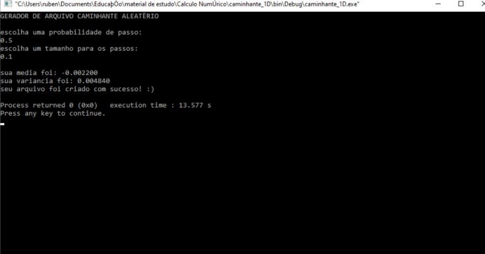
Aqui, podemos observar os cálculos para média e variância como sendo: $<x>$ = −0.002200 e $\sigma^2$ = 0.0048
- Histograma:
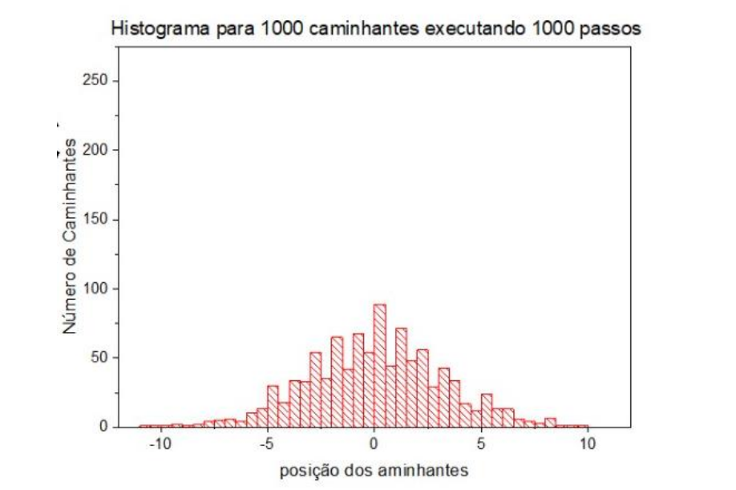
Atividade 2
- Objetivo: Dada uma distribuição de probabilidade específica, selecione um número M de pontos arbitrários (onde fixamos M = 1000) onde cada ponto corresponde a média de N números aleatórios (N = 20, 100, 500); plote de forma gráfica a média móvel e observe que, conforme o número N cresce, a distribuição fica mais bem definida e a largura da distribuição também muda. Distribuições a serem analisadas: Gaussiana, Gamma, exponencial e uniforme.
- Sobre a minha simulação: Primeiramente, elaborei um código em C para gerar números aleatórios como usualmente através da função rand() e da biblioteca <time.h> . Ao calcular as médias dos valores uando a função geradora de números aleatórios (double)RAND_MAX) implementei funções para cada uma das funções de distribuição de probabilidade e iterei ela 1000 vezes como requisitado, salvando os resultados num arquivo .txt com o título da função na qual estava chamando naquela execução. Refiz o procedimento para cada função 3 vezes criando arquivos com N = 20, 100 e 1000. Com os arquivos em mãos, utilizei um software externo de plotagem para gerar cada um dos gráficos exibidos no decorrer do trabalho. Código: segue como exemplo o meu código usado com parâmetros fixados para a função de distribuição de probabilidade gaussiana com N = 20.
#include<stdlib.h>
#include<math.h>
#include<stdio.h>
#include<time.h>
double gaussdp(double g){
g = exp(pow(-g,2));
return g;
}
double gammadp(double m){
if(m <= 0.0){
return 0;
}
if(m > 0.0){
m = tgamma(m);
return m;
}
}
double expdp(double e){
if(e <= 0.0){
return 0;
}
if(e > 0.0){
e = exp(-e);
return e;
}
}
double uniformdp(double u){
//usando como parametros a = 0.10 e b = 0.75
if(u < 0.10){
return 0;
}
if(u > 0.75){
return 1;
}
if(0.10 <= u && u <= 0.75){
u = (u-0.1)/0.65;
return u;
}
}
int main(){
int i,j,N=20,M=1000;
double r,x,xm, Xm;
FILE*random;
random = fopen("fdp_gaussianaN20.txt","w+");
//lembrar: calcular média de N num aleatorios para gerar M pontos da
distribuição!
srand(time(NULL));
for(j=0;j<M;j++){
xm = 0;
for(j=0;j<N;j++){
r = rand()/((double)RAND_MAX);
x = (gaussdp(r));
xm = xm + x;
} xm = xm/N;
Xm = Xm + xm;
fprintf(random,"%d %lf\n", j, xm);
} Xm = Xm/M;
printf("a média e igual a: %lf", Xm);
fclose(random);
printf("seu arquivo foi criado com sucesso! :)\n");
return (0);
}
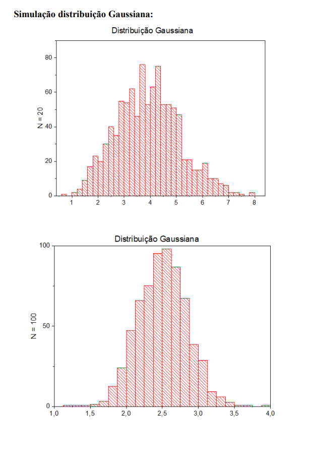
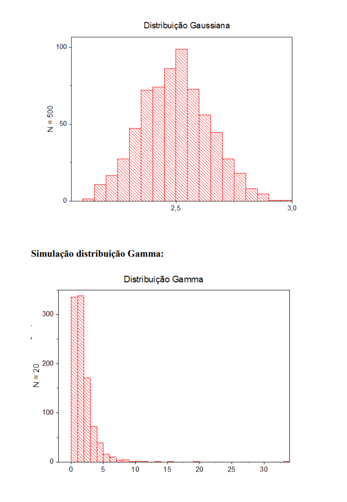
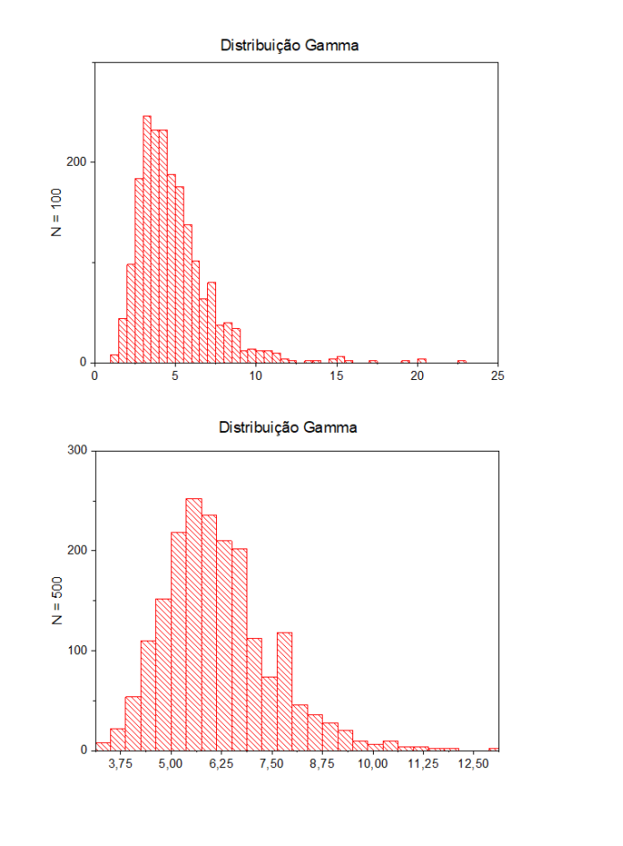
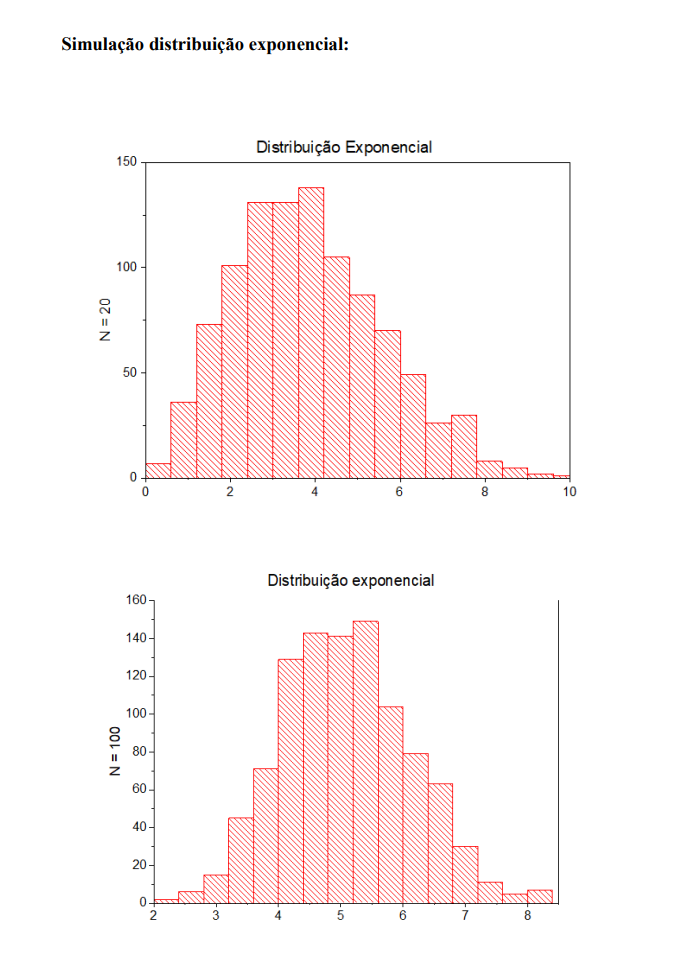
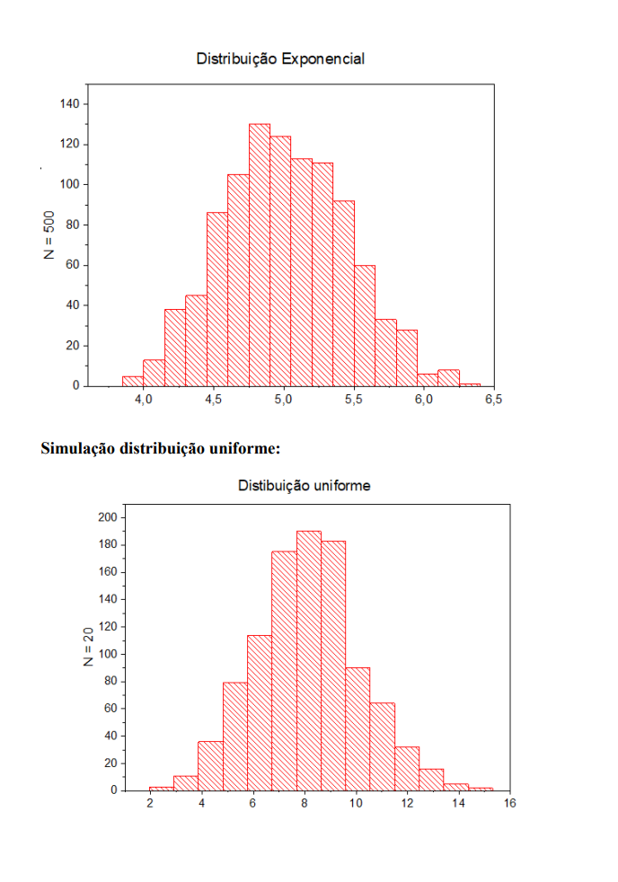
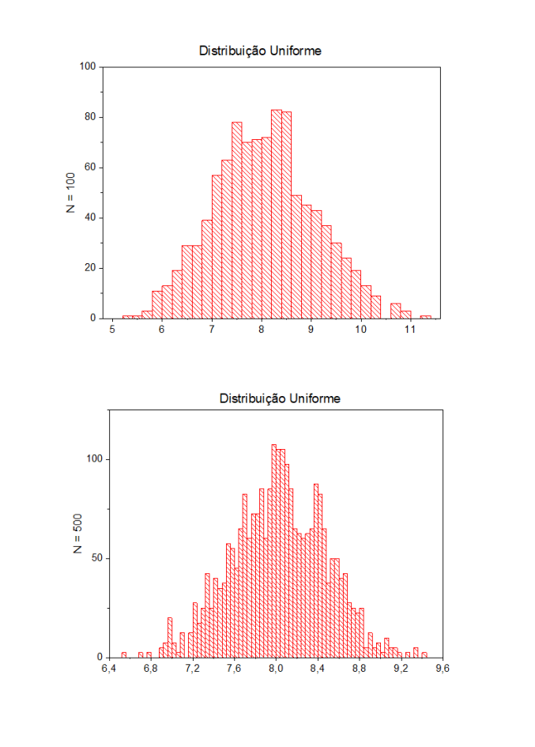
Atividade 3 - Modelo de Ising
Objetivo: Elaborar um programa para simular o modelo de Ising em uma rede quadrada de duas dimensões, implementando o algoritmo de Monte Carlo, usando um sistema ferromagnético com condições de contorno periódicas. Devemos iniciar a partir de diferentes configurações iniciais, isto é, os spins devem ser aleatoriamente distribuídos; todos de mesmos valores; parte com valor 𝑠1 e parte com valor 𝑠2. Plote gráficos para analisar o comportamento do calor específico e da susceptibilidade magnética em diferentes regimes de temperatura para um dado tamanho de rede N (n x n), mantendo registro de quantos passos de Monte Carlo são executados. (utilizado como parâmetro para essa construção uma parte da atividade proposta em [2]).
Sobre a simulação : Como sabemos, o modelo de Ising consiste numa rede de sítios interconectados, cada sítio podendo assumir dois valores distintos $𝑠_1$ e $𝑠_2$. Note que temos aqui apenas uma simples representação de um sistema magnético onde o spin s, pode assumir valores -1 e 1. A energia (E) do sistema e a sua magnetização (M) são estabelecidas através das seguintes relações
$$ E = - J \sum^N_{<i,j>} s_i s_j - B \sum^N_{i = 1} s_j \tag{1}$$
$$ M = \sum^N_{i = 1} s_i \tag{2}$$
Onde < 𝑖,𝑗 > representam as interações somente entre os primeiros vizinhos, J é a constante de troca do sistema (para sistemas ferromagnéticos temos 𝐽 > 0 e para antiferromagnéticos 𝐽 < 0), e B um campo magnético externo qualquer. O sistema é uma das variações mais simples que apresentam uma transição de fase do tipo ordem-desordem, o que permite que usemos ele para representar inclusive outros sistemas físicos que possuem esse mesmo tipo de transição, como gás de rede, interações sociais, economia, neurociência etc. [4]
#include <iostream>
#include <stdio.h>
#include <stdlib.h>
#include <string.h>
#include <time.h>
#include <math.h>
#define N 30 //tamanho da rede -1 linha e -1 coluna que vão ser perididas nas iterações
#define Nt 784 //constante pra preencher as bordas periódicamente
#define J 0.5 //constante ferromagnetismo(+/-); dividimos por 2 para evitar repeticao energias
#define B 0
#define NE 2 //Vetor para guardar as energias do passo atual e posterior
#define T 5
#define C 10000 //Número de iterações
using namespace std;
void periodico (int M[N][N]){ //Tornando uma matriz quadrada periódica
int i,j;
for(j=1;j<(N-1);j++){
M[0][j] = M[N-2][j];
M[N-1][j] = M[1][j];
}
for(i=1;i<(N-1);i++){
M[i][0] = M[i][N-2];
M[i][N-1] = M[i][1];
}
M[0][0] = M[N-2][N-2];
M[0][N-1] = M[N-2][1];
M[N-1][0] = M[1][N-2];
M[N-1][N-1] = M[1][1];
}
void energia (int M[N][N], double Energias[NE], double MEM[4], double t){ //Função onde ocorre as mudanças de energia
int i, j, prob, prob2, de, O[N][N];
double parametro, sorteio, beta, Eprov;
for(i=0;i<N;i++){
for(j=0;j<N;j++){
O[i][j] = M[i][j];
}
}
prob = rand()%(N-2) + 1; //escolhendo um spin aleatório da rede
prob2 = rand()%(N-2) + 1;
Energias[0] = 0;
Energias[1] = 0;
for(i=0;i<4;i++){
MEM[i] = 0;
}
for(i=1;i<(N-1);i++){ //Calculando a energia atual
for(j=1;j<(N-1);j++){
Energias[0] += -J*((M[i][j]*M[i][j+1]) + (M[i][j]*M[i+1][j]) +
(M[i][j]*M[i][j-1]) + (M[i][j]*M[i-1][j])) - B*M[i][j];
}
}
O[prob][prob2] = -O[prob][prob2]; //Alterando o spin escolhido
for(i=1;i<(N-1);i++){ //Calculando a nova energia
for(j=1;j<(N-1);j++){
Energias[1] += -J*((O[i][j]*O[i][j+1]) + (O[i][j]*O[i+1][j]) +
(O[i][j]*O[i][j-1]) + (O[i][j]*O[i-1][j])) - B*O[i][j];
}
}
de = Energias[1] - Energias[0]; //Diferença de energia entre os estados
if(de>0){ //Analisando o caso onde a energia aumenta
sorteio = rand()%RAND_MAX;
sorteio = sorteio/RAND_MAX;
parametro = exp(-de/t);
if(sorteio<=parametro){
M[prob][prob2] = O[prob][prob2];
}
}
for(i=1;i<(N-1);i++){ //Iterando E, E^2, M e M^2
for(j=1;j<(N-1);j++){
Eprov = -J*((M[i][j]*M[i][j+1]) + (M[i][j]*M[i+1][j]) + (M[i][j]*M[i][j-1]) +
(M[i][j]*M[i-1][j])) - B*M[i][j];
MEM[0] += Eprov;
MEM[1] += Eprov*Eprov;
MEM[2] += M[i][j];
MEM[3] += M[i][j]*M[i][j];
}
}
}
int main(){
int i, j, M[N][N], k; //k é o contador de iterações
double prob, t, Energias[NE], MEM[4]; //MEM guarda as grandezas desejadas (E, E^2, M e M^2)
FILE* data = fopen("Dados.txt", "w+");
srand((unsigned)time(NULL));
for(t=0.5;t<=T;t+=0.1){ //Loop para analisar diferentes temperaturas
for(i=0;i<NE;i++){ //Zerando os dados
Energias[i] = 0;
}
for(i=0;i<4;i++){
MEM[i] = 0;
}
for(i=1;i<(N-1);i++){ //Definindo a população inicial
for(j=1;j<(N-1);j++){
/*prob = rand()%RAND_MAX;
prob = prob/RAND_MAX;
if(prob<=0.5){
M[i][j] = 1; //isso daqui foi de quando estavamos gerando condição incial aleatoria, antes da dica do professor de começar todos em +/-1
} else {
M[i][j] = -1;
}*/
M[i][j] = 1;
}
}
periodico(M);
for(k=0;k<C;k++){ // Loop das iterações
energia(M,Energias,MEM,t);
periodico(M);
}
//fprintf(data,"%g %g %g %g %g",t,MEM[0]/Nt,fabs(MEM[2])/Nt,
(float)((MEM[1]/Nt)-(MEM[0]*MEM[0])/(Nt*Nt))/(t*t), (float)((MEM[3]/Nt)-
(MEM[2]*MEM[2])/(Nt*Nt))/t);
//desistimos desse printf por conta de correlação
fprintf(data,"%g %g ",t,MEM[0]/Nt);
for(k=0;k<500;k++){ // Loop das iterações
energia(M,Energias,MEM,t);
periodico(M);
}
fprintf(data,"%g ",fabs(MEM[2])/Nt);
for(k=0;k<500;k++){ // Loop das iterações
energia(M,Energias,MEM,t);
periodico(M);
}
fprintf(data,"%g ",(float)((MEM[1]/Nt)-(MEM[0]*MEM[0])/(Nt*Nt))/(t*t));
for(k=0;k<500;k++){ // Loop das iterações
energia(M,Energias,MEM,t);
periodico(M);
}
fprintf(data,"%g",(float)((MEM[3]/Nt)-(MEM[2]*MEM[2])/(Nt*Nt))/t);
fprintf(data,"\n");
cout << t << " ok" << endl;
}
fclose(data);
}
- Trabalho gráfico : Nessa sessão podemos observar como prometido os plots referentes as propriedades de susceptibilidade magnética e calor específico para fazermos uma análise quantitativa mais eficiente do nosso sistema. Para isso, consideramos que o sistema precisa rodar o algoritmo de metropolis várias vezes até estar termalizado, algoritmo esse que consiste no seguinte passo a passo:
- Testamos uma modificação aleatória no sistema;
- Calculamos a diferença de energia devido a esta modificação;
- Se ∆𝐸 ≤ 0, a nova configuração é aceita;
- Se ∆𝐸 > 0, é preciso calcular 𝜔 = exp(−𝛽∆𝐸) e gerar um número aleatório 𝑟 ∈ [0,1] uniformemente. Se 𝑟 ≤ 𝜔 a nova configuração é aceita; se 𝑟 > 𝜔 a modificação é descartada.
Como vamos calcular as grandezas < 𝐸 >, < $𝐸^2$ >, < 𝑀 > 𝑒 < $𝑀^2$ > durante nossa simulação, precisamos garantir que um número razoável de passos de Monte Carlo ocorra para o sistema estar em um estado termalizado [1][2], para somente então começarmos a calcular essas médias. Após isso, os observáveis são calculados de acordo com as seguintes fórmulas:
Para o Calor específico (C), vamos ter
$$ C = \frac{<E^2> - <E>^2}{k_b T^2}$$
E para a Susceptibilidade magnética (𝜒)
$$ \chi = = \frac{<M^2> - <M>^2}{k_b T} $$
Ambos os gráficos vão ser gerados em função da temperatura que variamos no código/sistema.
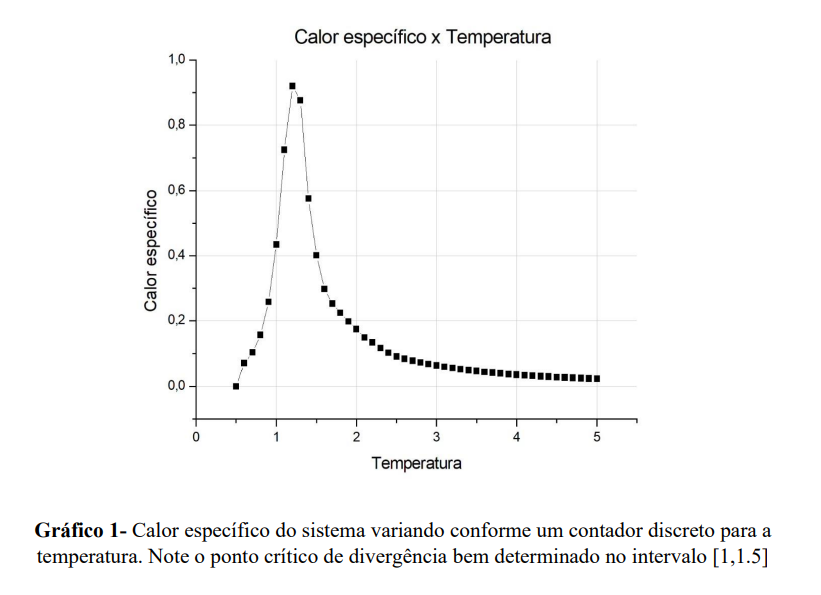
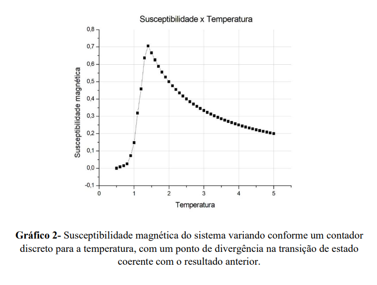
Dado a determinação coerente com o esperado desses observáveis, também tomamos a liberdade de introduzir os gráficos que são geralmente referenciados na literatura [1][3] para efeito de comparação do bom andamento da simulação do nosso sistema.
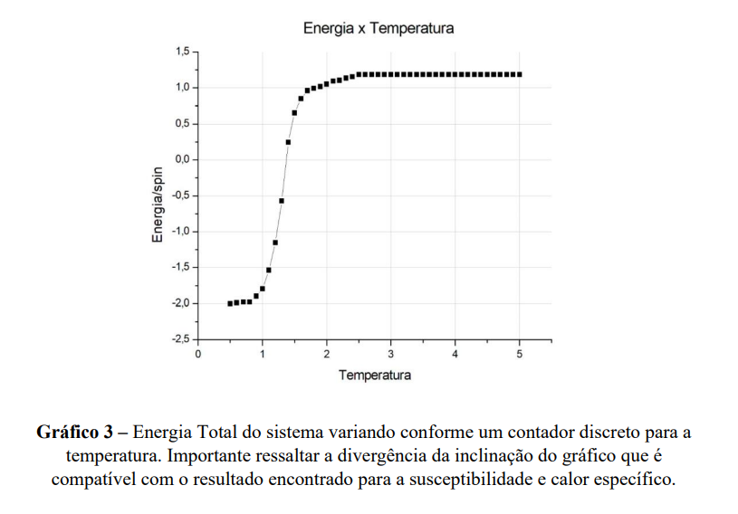
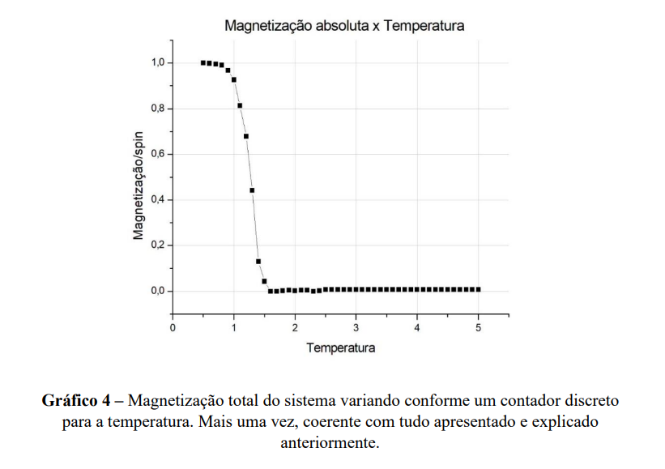
Acreditamos que esses gráficos são igualmente importantes para a visualização e um bom entendimento do funcionamento do sistema proposto. A temperatura crítica 𝑇𝑐 que caracteriza a perda das propriedades coletivas dos 𝑠𝑝𝑖𝑛𝑠 e consequentemente marca a perda do fenômeno de histerese [5], é coerente em todos os gráficos apresentados (e pode ser determinada com precisão dado um maior poder de processamento para gerar uma rede de spins maior que N=100).
Referências
- Antunes, Felipe. (2012). Estudo do Modelo de Ising Bidimensional Utilizando o Algorítimo de Metropolis. 10.13140/RG.2.1.2354.1840.
- Cabral, Leonardo. (2018.1). Módulo 11 – Simulação de Ensembles estatísticos utilizando Monte Carlo. Notas de aula da disciplina Métodos computacionais para física.
- Barry M. McCoy and Tai Tsun Wu (1973), The Two-Dimensional Ising Model. Harvard University Press, Cambridge Massachusetts, ISBN 0-674-91440-6.
- «PiresMA/Ising_like_models_interdisciplinary_applications». GitHub. Consultado em 12 de julho de 2021.
- Modelo Ising – Wikipédia, a enciclopédia livre (wikipedia.org)